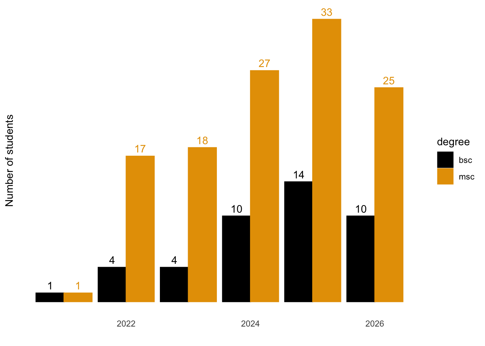

The goal of ghedata is to share data resources that document the work of the Global Health Engineering group at ETH Zurich. The data can be used for research, teaching, and learning purposes. The data is available as an R data package, in CSV and XLSX formats.
Installation
You can install the development version of ghedata from GitHub with:
# install.packages("devtools")
devtools::install_github("global-health-engineering/ghedata")
## Run the following code in console if you don't have the packages
## install.packages(c("dplyr", "knitr", "readr", "stringr", "gt", "kableExtra"))
library(dplyr)
library(knitr)
library(readr)
library(stringr)
library(gt)
library(kableExtra)
library(ggthemes)
library(ggplot2)Alternatively, you can download the individual datasets as a CSV or XLSX file from the table below.
- Click Download CSV. A window opens that displays the CSV in your browser.
- Right-click anywhere inside the window and select “Save Page As…”.
- Save the file in a folder of your choice.
| dataset | CSV | XLSX |
|---|---|---|
| people | Download CSV | Download XLSX |
| computational | Download CSV | Download XLSX |
| github_organisations | Download CSV | Download XLSX |
| github_repositories | Download CSV | Download XLSX |
| github_repository_types | Download CSV | Download XLSX |
| github_commits | Download CSV | Download XLSX |
| github_commits_by_type | Download CSV | Download XLSX |
| proposals | Download CSV | Download XLSX |
| github_commits_by_person | Download CSV | Download XLSX |
| github_commits_by_members | Download CSV | Download XLSX |
| zenodo_records | Download CSV | Download XLSX |
Data
The package provides access to 11 tables, described below by topic.
people
The dataset people contains data about people that have worked for the group. This includes staff, as well as undergraduate student projects.
It has 205 observations and 7 variables.
people |>
head(3) |>
gt::gt() |>
gt::as_raw_html()| title | degree | type | b_m_student | start_date | year | thesis_title |
|---|---|---|---|---|---|---|
For an overview of the variable names, see the following table.
| variable_name | variable_type | description |
|---|---|---|
| project_id | character | Unique identifier for each person using a combination of other metadata. Folder name on Google Drive. |
| degree | character | Categorical variable with four levels: bsc, msc, phd, staff. |
| type | character | Categorical variable with six levels: hiwi, intern, post-doc, scientific-assitant, sem-proj, thesis. |
| b_m_student | character | Binary variable to identify if person is BSc or MSc students. Levels: yes, no. |
| start_date | Date | Start date of the person. |
| year | numeric | Year of the start date. |
| thesis_title | character | Title of the thesis. |
GitHub tables
Seven tables describe the work of the group on GitHub. They hold counts only and no name, login or email address of the person who made a commit.
-
github_organisationshas 12 rows, one per organisation, with the number of public and private repositories. -
github_repositorieshas 212 rows, one per public repository. -
github_repository_typeshas 133 rows with the number of repositories per organisation, visibility, type and year of creation. It counts all 3,141 repositories, private ones and student work included, and names none. -
github_commitshas 486 rows, one per organisation, visibility and month, with the number of commits on the default branches. Commits by people, by bots, automated pushes and merge commits each have their own column. Private repositories are counted and never named. -
github_commits_by_typehas 484 rows with the same commits per organisation, visibility, repository type and month. -
github_commits_by_personhas 35 rows, one per group member, with the number of commits over the last twelve full months. A person is a rank, never a name. In a small group a rank can still point to a person for someone who knows the group. -
github_commits_by_membershas 63 rows, one per month, with the number of commits by all group members together.
The data was read from GitHub on 2026-11-11.
The number of repositories by type, without the 2,796 repositories of learners in courses and workshops:
github_repository_types |>
dplyr::filter(repository_type != "learner repository") |>
dplyr::count(repository_type, visibility, wt = repos) |>
tidyr::pivot_wider(names_from = visibility, values_from = n, values_fill = 0) |>
dplyr::mutate(total = public + private) |>
dplyr::arrange(dplyr::desc(total)) |>
knitr::kable()| repository_type | private | public | total |
|---|---|---|---|
| data package | 19 | 78 | 97 |
| teaching and training | 25 | 60 | 85 |
| research project | 32 | 35 | 67 |
| proposal or report | 12 | 8 | 20 |
| software | 3 | 12 | 15 |
| hardware | 0 | 14 | 14 |
| manuscript | 5 | 6 | 11 |
| student project | 6 | 4 | 10 |
| website and communication | 1 | 9 | 10 |
| group management | 4 | 3 | 7 |
| organisation profile | 0 | 7 | 7 |
| template | 0 | 2 | 2 |
The commits made by people, by repository type and year. The year 2026 runs up to October.
github_commits_by_type |>
dplyr::mutate(year = format(month, "%Y")) |>
dplyr::count(repository_type, year, wt = commits) |>
tidyr::pivot_wider(names_from = year, values_from = n, values_fill = 0, names_sort = TRUE) |>
dplyr::mutate(total = rowSums(dplyr::across(-repository_type))) |>
dplyr::arrange(dplyr::desc(total)) |>
knitr::kable()| repository_type | 2021 | 2022 | 2023 | 2024 | 2025 | 2026 | total |
|---|---|---|---|---|---|---|---|
| data package | 42 | 57 | 582 | 453 | 407 | 836 | 2377 |
| research project | 0 | 5 | 56 | 295 | 420 | 793 | 1569 |
| software | 0 | 0 | 1 | 162 | 530 | 283 | 976 |
| website and communication | 0 | 16 | 250 | 323 | 130 | 170 | 889 |
| teaching and training | 38 | 176 | 79 | 22 | 137 | 415 | 867 |
| hardware | 0 | 0 | 11 | 301 | 105 | 403 | 820 |
| student project | 0 | 86 | 72 | 23 | 51 | 170 | 402 |
| manuscript | 0 | 23 | 171 | 28 | 9 | 14 | 245 |
| proposal or report | 0 | 0 | 34 | 23 | 53 | 74 | 184 |
| group management | 0 | 3 | 56 | 10 | 22 | 15 | 106 |
| learner repository | 7 | 0 | 26 | 0 | 0 | 64 | 97 |
| organisation profile | 0 | 4 | 6 | 0 | 11 | 10 | 31 |
| template | 0 | 0 | 0 | 9 | 5 | 16 | 30 |
Commits by bots and automated pushes are counted apart. An automated push is a commit that a device or a script makes under the account of a person, for example a sensor that uploads its readings every hour.
github_commits |>
dplyr::mutate(year = format(month, "%Y")) |>
dplyr::summarise(
people = sum(commits),
bots = sum(commits_bot),
automated = sum(commits_automated),
merge = sum(commits_merge),
.by = year
) |>
knitr::kable()| year | people | bots | automated | merge |
|---|---|---|---|---|
| 2021 | 87 | 0 | 0 | 12 |
| 2022 | 370 | 0 | 0 | 5 |
| 2023 | 1344 | 0 | 0 | 85 |
| 2024 | 1649 | 31 | 0 | 137 |
| 2025 | 1880 | 119 | 0 | 223 |
| 2026 | 3263 | 51 | 1436 | 549 |
github_commit_change() compares the commits of the last 12 complete months with the 12 months before.
github_commit_change() |>
knitr::kable(digits = 1)| organisation | visibility | current_start | current_end | previous_start | previous_end | commits_current | commits_previous | factor |
|---|---|---|---|---|---|---|---|---|
| all | all | 2025-11-01 | 2026-10-01 | 2024-11-01 | 2025-10-01 | 3407 | 2079 | 1.6 |
For an overview of the variable names, see the following table.
| file_name | variable_name | variable_type | description |
|---|---|---|---|
| github_organisations.rda | organisation | character | Login of the GitHub organisation. An organisation account, not a person. |
| github_organisations.rda | purpose | character | What the organisation is used for. Levels: research, data publishing, development, events, training, teaching. |
| github_organisations.rda | commits_counted | logical | TRUE when the commits of the organisation are counted in github_commits. FALSE for teaching organisations with one repository per student, which appear with repository counts only. |
| github_organisations.rda | created_date | Date | Date the organisation was created on GitHub. |
| github_organisations.rda | repos_public | integer | Number of public repositories on the snapshot date. |
| github_organisations.rda | repos_private | integer | Number of private repositories on the snapshot date. A count only, private repositories are never named. |
| github_organisations.rda | repos_archived | integer | Number of archived repositories on the snapshot date. NA for organisations whose commits are not counted. |
| github_organisations.rda | repos_listed | integer | Number of public repositories of the organisation that are rows of github_repositories. |
| github_organisations.rda | snapshot_date | Date | Date (UTC) on which the data was read from the GitHub API. |
| github_repositories.rda | organisation | character | Login of the GitHub organisation that owns the repository. |
| github_repositories.rda | repository | character | Name of the public repository. |
| github_repositories.rda | created_date | Date | Date the repository was created. |
| github_repositories.rda | pushed_date | Date | Date of the last push to the repository before the snapshot date. |
| github_repositories.rda | is_archived | logical | TRUE when the repository is archived. |
| github_repositories.rda | is_fork | logical | TRUE when the repository is a fork of another repository. |
| github_repositories.rda | license | character | SPDX identifier of the licence that GitHub detects. NA when there is none or GitHub cannot name it. |
| github_repositories.rda | primary_language | character | Main language of the repository as detected by GitHub. NA when there is none. |
| github_repositories.rda | repository_type | character | Type of the repository, see github_repository_types for the rules. Levels in this table: data package, student project, hardware, manuscript, organisation profile, proposal or report, research project, software, teaching and training, template, website and communication, group management. |
| github_repositories.rda | commits_total | integer | Number of commits on the default branch up to the last complete month before the snapshot date, made by people, without merge commits, commits by bots and automated commits. NA for forks. |
| github_repository_types.rda | organisation | character | Login of the GitHub organisation. |
| github_repository_types.rda | visibility | character | Visibility of the repositories on the snapshot date. Levels: public, private. |
| github_repository_types.rda | repository_type | character | Type of the repositories, from rules on the name, the top level files, the topics, the main language and the purpose of the organisation. Levels: learner repository, organisation profile, data package, student project, manuscript, proposal or report, teaching and training, website and communication, template, group management, software, hardware, research project. |
| github_repository_types.rda | created_year | integer | Year the repositories were created. |
| github_repository_types.rda | repos | integer | Number of repositories. A count only, no repository is named. |
| github_commits.rda | organisation | character | Login of the GitHub organisation. |
| github_commits.rda | visibility | character | Visibility of the repositories on the snapshot date. Levels: public, private. |
| github_commits.rda | month | Date | First day of the month (UTC) in which the commits were authored. |
| github_commits.rda | commits | integer | Number of commits made by people on the default branches, without merge commits, commits by bots and automated commits. Forks are not counted. |
| github_commits.rda | commits_bot | integer | Number of commits authored by bot accounts and by GitHub Actions. Not part of commits. |
| github_commits.rda | commits_automated | integer | Number of commits pushed by a device or a script under the account of a person, such as sensor data on a schedule. Recognised by the first line of the message with the patterns in data-raw/github_automated_commits.csv. Not part of commits. |
| github_commits.rda | commits_merge | integer | Number of merge commits (more than one parent) that are neither by bots nor automated. Not part of commits. |
| github_commits.rda | commits_assisted | integer | Number of commits counted in commits whose message carries a trailer of a coding agent (Co-Authored-By for Claude or Copilot, Assisted-by, or the Claude Code line). A lower bound, since the trailer is optional. |
| github_commits.rda | repos_active | integer | Number of repositories with at least one commit counted in commits in that month. |
| github_commits_by_type.rda | organisation | character | Login of the GitHub organisation. |
| github_commits_by_type.rda | visibility | character | Visibility of the repositories on the snapshot date. Levels: public, private. |
| github_commits_by_type.rda | repository_type | character | Type of the repositories, see github_repository_types for the levels and the rules. |
| github_commits_by_type.rda | month | Date | First day of the month (UTC) in which the commits were authored. |
| github_commits_by_type.rda | commits | integer | Number of commits made by people on the default branches, without merge commits, commits by bots and automated commits. Forks are not counted. Adds up to commits in github_commits. |
| github_commits_by_type.rda | commits_bot | integer | Number of commits authored by bot accounts and by GitHub Actions. Not part of commits. |
| github_commits_by_type.rda | commits_automated | integer | Number of commits pushed by a device or a script under the account of a person. Not part of commits. |
| github_commits_by_type.rda | commits_assisted | integer | Number of commits counted in commits whose message carries a trailer of a coding agent. A lower bound, since the trailer is optional. |
| github_commits_by_type.rda | repos_active | integer | Number of repositories of that type with at least one commit by a person in that month. |
| github_commits_by_person.rda | person_rank | integer | Rank of the person by number of commits, 1 for the most commits. Stands in for the person; no login or name is kept. |
| github_commits_by_person.rda | commits | integer | Commits by the person in the twelve months from first_month to last_month, counted as in github_commits (no bots, no automated pushes, no merge commits) and without commits in the training organisations. |
| github_commits_by_person.rda | commits_assisted | integer | Number of these commits that carry an agent trailer. |
| github_commits_by_person.rda | share_assisted | double | commits_assisted divided by commits. Empty for a person with 0 commits. |
| github_commits_by_person.rda | workshop | character | Part in the workshops of the group in the twelve months: participant (has commits in a training organisation), trainer (ran the workshops) or none. |
| github_commits_by_person.rda | first_month | date | First month of the twelve months counted. |
| github_commits_by_person.rda | last_month | date | Last month of the twelve months counted. |
| github_commits_by_members.rda | month | date | First day of the month. |
| github_commits_by_members.rda | commits | integer | Commits by group members in the month, without commits in the training organisations. |
| github_commits_by_members.rda | commits_assisted | integer | Number of these commits that carry an agent trailer. |
| github_commits_by_members.rda | lookup_complete | logical | TRUE for the months in which every person was checked against the lookup of group members. |
Proposals table
One table holds the funding proposals of the group. It holds no name of a person.
-
proposalshas 81 rows, one per proposal since 2021, with the status, the funder, the dates of submission and answer, and the budget in its currency and in Swiss francs. 23 proposals were accepted. The requested budgets add up to CHF 34,010,433, of which CHF 2,986,253 were accepted. 2 proposals have no budget on record, so the sums are lower bounds.
Reach table
One table holds what was published on Zenodo and how often it was viewed and downloaded. It holds no name of an author.
-
zenodo_recordshas 66 rows, one per record on Zenodo by a creator from the group or in the openwashdata community, with 13,347 views and 3,706 downloads in total. The counts were read on 2026-11-18.
Example
library(ghedata)
undergrad_students <- people |>
filter(b_m_student == "yes") |>
filter(!is.na(thesis_title)) So far, GHE has supervised 164 projects of which 43 were done by BSc and 121 by MSc students.
undergrad_students |>
count(degree, year) |>
ggplot(aes(x = year, y = n, label = n, fill = degree, color = degree)) +
geom_col(position = "dodge") +
geom_text(position=position_dodge(width=0.9),
vjust=-0.5,
show.legend = FALSE) +
labs(x = "",
y = "Number of students") +
scale_fill_colorblind() +
scale_color_colorblind() +
theme_minimal() +
theme(panel.grid = element_blank(),
axis.text.y = element_blank())
License
Data are available as CC-BY.
Citation
Please cite this package using:
citation("ghedata")
#> To cite package 'ghedata' in publications use:
#>
#> Schöbitz L (2024). _ghedata: Data on the Work of the Global Health
#> Engineering Group_. R package version 0.0.0.9000,
#> <https://github.com/Global-Health-Engineering/ghedata>.
#>
#> A BibTeX entry for LaTeX users is
#>
#> @Manual{,
#> title = {ghedata: Data on the Work of the Global Health Engineering Group},
#> author = {Lars Schöbitz},
#> year = {2024},
#> note = {R package version 0.0.0.9000},
#> url = {https://github.com/Global-Health-Engineering/ghedata},
#> }